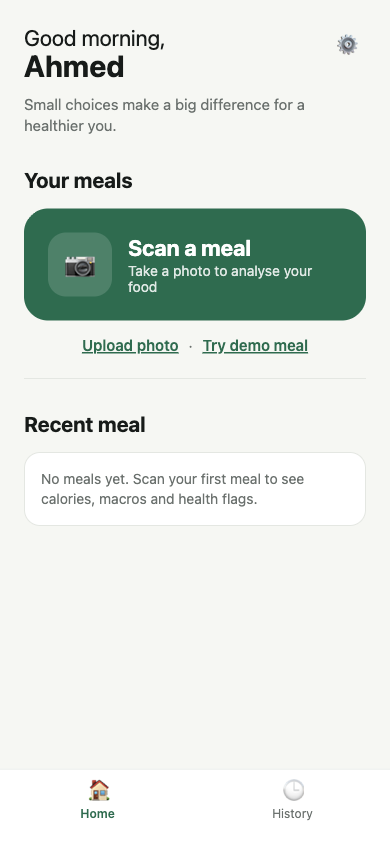
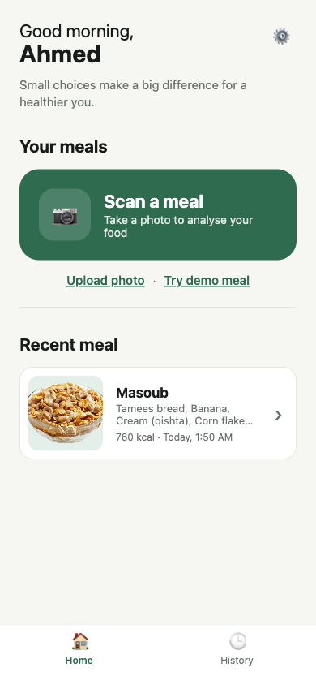
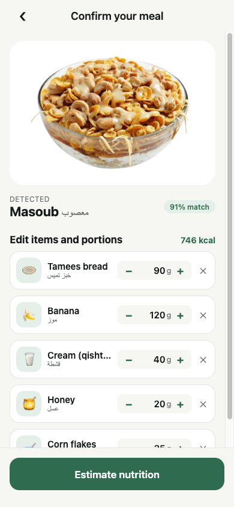
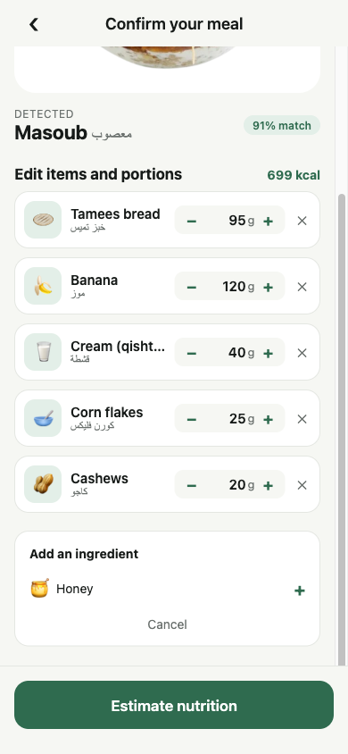
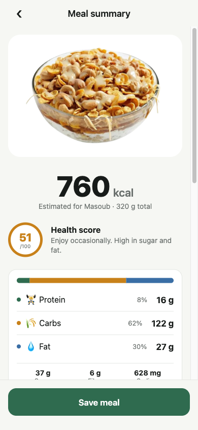
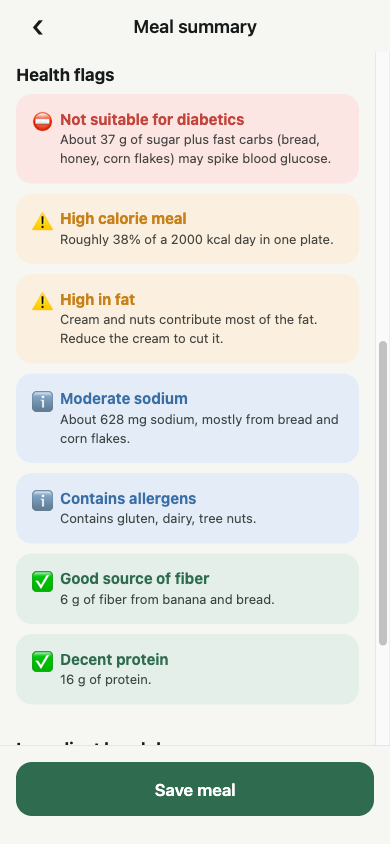
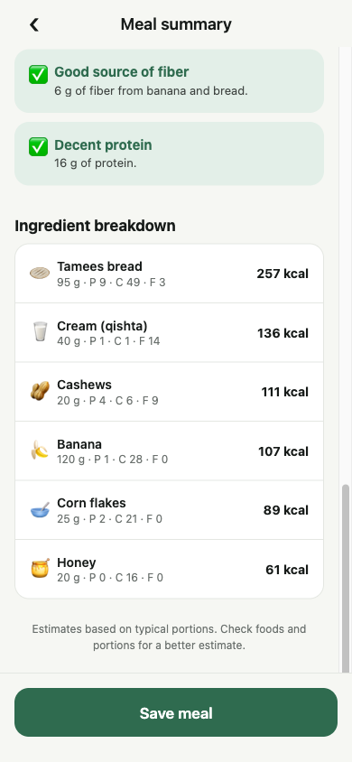

Deliver the meal-logging stories planned for Sprint 2
The user adds a photo, the app proposes the foods inside it, and the user corrects the items and portions before any estimate is shown.
Three working screens, running on iOS, Android and the web
Greets the user, offers Scan a meal or Upload photo, and shows the most recent meal with a History tab.
Shows the detected dish with a confidence score. Every ingredient has an editable weight in grams and can be removed or added.
Total calories, a health score, protein / carbs / fat with percentages, sugar, fiber and sodium, and a per-ingredient breakdown.
Clear warnings such as “Not suitable for diabetics”, high calories, high fat, sodium and allergens, plus positive notes like fiber and protein.
Example: Ahmed logs a plate of masoub
Scan with the camera or upload from the gallery.
The app proposes the dish and its ingredients.
Adjust grams, remove or add ingredients.
Read calories, macros and health flags.
The meal appears in Recent meal and History.
The starting point for every meal
Scan a meal opens the camera. Upload photo opens the gallery. A demo meal link lets us test without a camera.
After saving, the latest meal appears with its ingredients, calories and time. Tapping it reopens the summary.
The History tab lists every saved meal of the session.


The user stays in control of what was detected
The photo is analysed and labelled Masoub · معصوب with a 91% match. Six ingredients are proposed with default portions.
Each ingredient has − / + steppers and a gram field. Items can be removed with ✕ or added from the Add missing ingredient panel.
The calorie total updates instantly as portions change, before the user taps Estimate nutrition.


Calories, macros, health flags and a per-ingredient breakdown
Total kcal, a health score out of 100, and a macro bar for protein, carbs and fat with sugar, fiber and sodium.
Rule-based flags warn about diabetes risk, calories, fat, sodium and allergens, and highlight positives.
Every ingredient with its grams, macros and calories, sorted by impact. Save meal stores it.



Recognition is mocked for now; everything after it is real and reusable
A cross-platform prototype so the whole team can run it on any device
One codebase runs on the iOS Simulator, Android, a real phone through Expo Go, and in the browser.
expo-image-picker handles camera and gallery with the required permissions declared in app.json.
A single analyseImage() function returns the detected meal. Nutrition values live in a per-100 g table and are scaled by the confirmed grams.
Home, Confirm and Summary screens with a lightweight navigator. Saved meals are kept in app state for this sprint.
Run manually on the web build and the iOS Simulator
| Area | Test case | Expected result | Outcome |
|---|---|---|---|
| Photo input | Open the demo meal | Confirm screen opens with the photo and “Analysing…” state | Pass |
| Recognition | Wait for analysis | Masoub detected with 91% match and 6 ingredients | Pass |
| Confirmation | Tap + on Tamees bread | Grams increase and live total rises | Pass |
| Confirmation | Remove Honey | Row disappears, total drops from 746 to 699 kcal | Pass |
| Confirmation | Add Honey back | Row returns, total becomes 760 kcal | Pass |
| Nutrition | Tap Estimate nutrition | Summary shows kcal, macros, score and breakdown | Pass |
| Flags | View health flags | Diabetes, calorie, fat, sodium, allergen and positive flags shown | Pass |
| Save | Tap Save meal | Home shows the meal under Recent meal and in History | Pass |
Stories 003–005 delivered, with an early start on 006
Replace the mock with a real AI model and complete the remaining stories
Connect a vision model so the prediction comes from the photo itself: the dish, its ingredients, and an estimated portion size for each one.
Look up confirmed foods in a nutrition API instead of the built-in table, so any dish can be estimated.
Store saved meals per account in Firebase so history follows the user across devices.
Let the user set conditions such as diabetes or allergies so the flags are tailored to them, with Arabic language support.